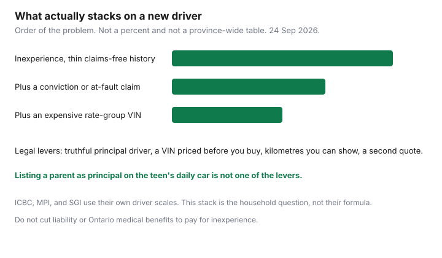

Insurance · Canada
How Canadian Parents Can Lower a Young Driver’s Auto Premium Without Gutting Coverage
The renewal that adds a newly licensed driver is often the largest one-year jump a household sees. The levers that actually move a Canadian premium are the licence class, who is the principal operator, which vehicle that person drives, and the kilometres you can document. The levers that look clever and are not legal are listing a parent as the main driver of a car the young person uses most, “forgetting” a licensed resident, or borrowing a U.S. article about good-student discounts that your insurer does not file. This page stays on the Canadian side of that line. Deductibles, honest mileage method, and broker-versus-direct shopping are already written under Transportation and are linked instead of repeated.
Disclosure: Auto broker quote flows and comparison sites are offer types. Saving Optimizer may earn a commission if partner links are added later. We do not currently claim a brokerage partnership. There is no national young-driver percentage to publish. Education only. Not brokerage advice.
Key takeaways
- Under-25 rates reflect inexperience, and they jump again with an at-fault claim or a conviction. The clean levers are vehicle, kilometres, driver training where the insurer files a discount, and an accurate principal-operator designation.
- The principal driver is the person who drives that vehicle most. Calling a parent the principal operator of a teen’s daily car is misrepresentation. A claim can be denied.
- A cheap purchase price is not a cheap rate group. Ask how the insurer rates the VIN before you buy the car.
- Ontario’s graduated system is G1, G2, then full G. The ministry sets the conditions. Insurers price the class and the years licensed. Confirm current road-test timing on ontario.ca.
- Quote the young driver inside the household multi-car policy and on a separate policy. Keep the lower total at the same liability and accident-benefits limits.
Understand why under-25 rates spike: experience, claims, and conviction loadings
Insurers are not charging more because a driver is 19 as a moral category. They are charging for a thin history. A newly licensed driver has little or no claims-free time. The statistical record for that cell is more crashes per driver. A conviction or an at-fault claim loads the same file again, and the two stack. There is no Canada-wide table that says “an at-fault claim is 20 percent for three years.” Each insurer files its own surcharge. Ask for it. The claim-impact guide is how to think about the years. Do not add a claim to “get it over with” on a young driver’s first policy.
Public systems price inexperience differently and still price it. ICBC uses a driver factor on Basic insurance. A new driver does not start at the experienced driver’s factor. Manitoba Public Insurance and SGI use their own driver-safety scales. Québec prices the private policy for the vehicle and the driver, while injury coverage sits on the SAAQ licence. None of those scales is an Ontario occasional-driver discount. The ICBC guide and the SAAQ guide are the public-system pages. Use them for those provinces. Use this page for the household decision those pages do not make: which car, which policy, which truthful designation.

Principal vs occasional driver designation—and the honesty risk of misclassifying
Every private-market application asks, in some form, who drives each vehicle most. That person is the principal operator. Everyone else who is licensed and may drive it is occasional, and occasional is still listed and still rated. The occasional rating is often lower than a principal rating. It is not zero, and it is not a place to hide the real main driver.
- Honest pattern. The young person drives the older car to school five days a week. They are principal on that car. A parent is occasional. The parent’s commuter car stays with the parent as principal. You then shop that structure, including a multi-car comparison.
- Misclassification. The young person has the only set of keys, and the application still names a parent with 20 years of claims-free driving as principal, to keep a discount. If there is a crash, the insurer investigates use. Misrepresentation can mean a denied claim, a cancelled policy, and a harder market at the next quote. FSRA expects Ontario applications to be accurate. Other provinces’ application laws are not softer on this point.
- Occasional that is real. The young person is away at school without the car, home some weekends, and drives a few thousand kilometres a year. Listing them as occasional can be true. Keep a simple record of who had the car. “Occasional” that is actually 15,000 commuting kilometres will not survive the first statement to an adjuster.
Do not leave a licensed household member off the application because the premium moved. Undisclosed drivers are a standard investigation question. The legal saving is a true designation plus a vehicle and a kilometre figure you can stand behind.
Vehicle choice: cheap to insure vs cheap to buy for new drivers
Parents often buy the cheapest running car and then meet a premium higher than the purchase price. Physical-damage premiums follow the insurer’s rate group for that model: how expensive it is to repair, how often it is stolen, and how it shows up in claims. A modest newer sedan can rate lower than an old performance car that cost less to buy. Safety features and a current winter-tire set can matter where the insurer files those discounts. The Ontario winter-tire guide covers that offer. It is not a young-driver discount by itself.
- Before you buy, ask a broker or the current insurer to rate two or three VINs you are actually considering, with the young person as principal and a stated kilometre figure.
- Separate the mandatory premium (liability and accident benefits, which follow the driver and the territory) from collision and comprehensive (which follow the vehicle). Dropping collision on a car you can afford to replace is a deductible-style decision. The deductible and mileage guide is the test: can you cash-flow the loss? Do not drop liability to the legal floor to make a sports car affordable.
- In B.C., the vehicle’s effect sits inside ICBC’s rating, not an Ontario rate-group conversation. Ask an Autoplan broker how that specific vehicle changes the premium with that driver, including distance. Do not import an Ontario CLEAR anecdote.
A car the household can replace from savings is a better fit for a new driver than a financed vehicle that forces you to carry full physical damage at a new-driver rate. That is a cash decision. It is also an insurance decision.
Graduated licensing, driver training, and documented kilometre limits that help
Graduated licensing is provincial. Insurers do not set the road rules. They ask which class you hold and how long you have held it.
- Ontario. The path is G1, then G2, then a full G. The province’s own pages set the time in each class, including any reduction for an approved beginner driver education course, the accompanying-driver rules, and the alcohol rules. Confirm the current months on ontario.ca before you plan a road test around a renewal. Insurers generally price a G1 or G2 differently from a full G with years of experience. A driver-training certificate helps only if that insurer’s filing includes a discount for an approved course. Ask. There is no universal percent.
- Other provinces. British Columbia’s L and N, Alberta’s graduated program, and Québec’s probationary licence each have their own conditions. Quote with the class the driver actually holds. Do not describe a Québec probationary driver as an Ontario G2 to make a forum answer fit.
- Kilometres you can document. A student who does not commute can truthfully rate at a lower annual distance than a parent’s guess of “average.” Use odometer photos or a simple log. The mileage guide is the method, including the point that a false low number is the same family of problem as a false principal operator. Pleasure use versus commute use has to match the school run if the school run is daily.
- Convictions and the graduated rules. A ticket for breaking a G1 or G2 condition is not a paperwork annoyance. It is a conviction the next insurer will see. The premium effect lasts as long as that insurer’s filing says. Avoiding the ticket is the discount.
When a separate policy for the young driver beats household multi-car
Multi-car discounts and young-driver ratings pull in opposite directions. The full comparison is on the multi-car guide. The parent version of the test is short:
- Household policy, young driver principal on the car they really use, experienced drivers principal on the others, multi-vehicle discount if the insurer still applies it.
- Same household policy with the young driver moved to the cheaper-to-insure vehicle, if that assignment is true.
- A separate policy in the young driver’s name, or with a parent listed exactly as the application allows, on that one car, and the rest of the household left untouched so their claims-free record is not rating the new driver.
Keep row 3 when its total, at the same liability limit and the same Ontario accident-benefits choices, is lower than rows 1 and 2. A separate policy can also be the path when one insurer will not keep the household in a standard market once the new driver is added. Get both quotes in writing. Do not cancel the household policy until the new contract is bound. A gap day is an uninsured day.
If the young person is a student in another city, the garaging postal code on row 3 may be the school address. Insuring a Toronto car that actually lives in another city, at Toronto rates, is another misrepresentation. Say where it is parked overnight.
FSRA/broker questions to ask before you accept the first renewal hike
When the renewal arrives, do not pay it the day it arrives and do not phone in anger and cut liability. FSRA’s consumer material tells Ontario drivers to work with the broker, agent, or insurer on what they are buying. Use the 45-day window from the annual review. Ask these questions and write the answers on the quote:
- Which driver is principal on which VIN, and which are occasional? Read the names back.
- What annual kilometres and what use (commute or pleasure) are rated on the young driver’s car?
- Is a driver-training discount on the policy? If not, does this insurer file one for an approved course, and is the certificate still accepted?
- What is the liability limit, and are medical and rehabilitation benefits still at least the mandatory Ontario amounts if you are in Ontario? Optional income replacement is a separate yes or no after 1 July 2026. The accident-benefits guide is the script. Do not strip it to offset a young-driver loading.
- Are winter tires and any telematics program still applied? Telematics can raise or lower a premium. The telematics guide is the privacy and surcharge question. A new driver should know the device is in the car.
- What changed versus last year in dollars: the new driver, a conviction, a rate change, a removed discount? Ask for one other market, broker or direct, on the same facts. The broker-versus-direct guide is the shopping method.
Accept the hike only after those answers are on paper and a second quote is not meaningfully cheaper at the same coverage. The legal savings are in the answers. They are not in a story about who drives the car.
Sources & date stamps
- FSRA, consumers — auto insurance and the customize-your-coverage page — Ontario liability minimum $200,000; accident-benefits optionality from 1 July 2026. Used 24 Sep 2026.
- Insurance Bureau of Canada, mandatory auto insurance requirements — private versus ICBC, MPI, and SGI. Used 24 Sep 2026.
- Ontario graduated licensing conditions and any G1 time reduction for driver education change. Confirm the current path on ontario.ca before you rely on a month count. This page does not reprint a road-test timetable.
- Insurer young-driver percentages and driver-training discounts are filings. None is stated here as a national figure.
Frequently asked questions
Why did the premium jump when we added a teen?
A newly licensed driver has little claims-free history, so insurers file a higher rate. An at-fault claim or a conviction stacks on top. The lawful responses are the vehicle, the kilometres, an accurate principal driver, and a second quote at the same limits.
Can we list a parent as the main driver to save money?
Only if the parent really drives that vehicle most. Listing a parent as principal on a car the young person uses as a daily driver is misrepresentation and can void a claim.
Does driver training lower the premium?
Only where that insurer’s filing includes a discount for an approved course, and you have the certificate. There is no national percent. Ontario may also shorten G1 time for an approved course. Confirm the current rule on the ministry page.
Is a cheap used car cheap to insure?
Not always. Rate groups follow repair cost, theft, and claims, not the price you paid. Ask the insurer to rate the VIN before you buy, with the young person as the principal driver.
Is this brokerage advice?
No. Education only. Broker quote flows are an offer type. We do not claim a partnership with any brokerage or insurer.